strange music page
live reports * * * 2002
#幕張・・・遠い。
KRAFTWERK
#で、11:30くらいから待望のKRAFTWERKでした。セットリストは多分下のよーな感じ、特に「EXPO 2000」と「RADIO-ACTIVITY」がかっちょ良かったなー。
しょっぱなから「NUMBERS」チープな映像に単純だけどクラフトワークでしか有り得ない音。会場みんな「ｷﾀ━━━━━━(ﾟ∀ﾟ)━━━━━━！！」みたいな顔してました。
後はもー至福の時間でした、終わっちゃうのが勿体無い。たぶん生涯1,2を争うライヴ体験。
- NUMBERS
- COMPUTERWORLD
- IT'S MORE FUN TO COMPUTE/HOME COMPUTER
- POCKET CALCULATOR [DENTAKU]
- EXPO 2000
- THE MAN MACHINE
- THE ROBOTS
- TOUR DE FRANCE
- AUTOBAHN
- THE MODEL
- NEON LIGHT
- SELLAFIELD/RADIOACTIVITY
- TRANS EUROPE EXPRESS/METAL ON METAL
- BOING BOOM TSCHAK/MUSIQUE NON STOP
- Ralph Hutter
- Florian Schneider
- Fritz Hilpert
- Hennig Schmitz
|
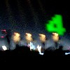 |
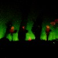 |
 |
|
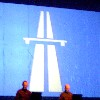 |
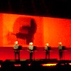 |
|
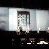 |
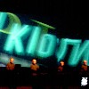 |
|
SQUAREPUSHER
#キチガイドリルンベース。「いえぇぇぇぇーす」とか言いながら「ガピョー」とか言う音を出しまくってました。けっこう客も引いてたけど、面白かったっす。
砂原良徳
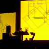
#えーと「LOVE BEAT」の曲をまったりと演奏、とてーも気持ちよかったんですけど・・・すいません気持ちよすぎて途中で立ち寝してました。映像と音のシンクロ具合が面白かったです、映像付きでDVDかなんか出せばイイのに。はじめて見た砂原良徳は極めてフツーの兄ちゃんでした。
まぁそんな感じで、ヒジョーに楽しかったです。
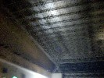
バイバイ幕張、またね。みたいな。
#芳垣安洋さんとマルコシアスバンプの佐藤研二（ぐわー懐かしい、イカ天見てたよ）のデュオ。
ゲストが豪華です・・・というか清水一登目当てです、芳垣ファンの方すみません。
2バスのドラムセットとマーシャル2段重ねのベースで非常に耳が痛い感じでした、目の前に芳垣さんのチャイナシンバル有ったし。間近すぎて怖。
基本線は叩きまくりの芳垣さんに、佐藤さんがベースをガリガリ弾きまくると言う感じでした。佐藤さんって相変わらず左手に白い手袋してベース弾いてるのね。ラウドな即興。
ヤドランカさんが入った全員の演奏では結構バランスの取れた感じで、この面子だとやっぱり面白いです。ヤドランカさんは初めて見たんですけど・・・天然かな？笑いました。
んで、お目当ての清水一登さんのはなんかの曲を清水さんが訥々と歌い上げた後、怒涛のプログレ（にしか聴こえなかった）なんでもTonny Williams Life Timeの曲だとか。後で探してみよう。
- (芳垣+佐藤)
- (芳垣+佐藤)
- (芳垣+佐藤)
- (芳垣+佐藤+勝井)
- (芳垣+佐藤+高良)
- Time After Time (全員)
- Doors/Light My Fire (全員)
- (芳垣+佐藤)
- (芳垣+佐藤)
- (Tonny Williams Life Timeの曲) (芳垣+佐藤+清水)
- HAIKU (全員)
- ? (全員)
- Cream/White Room (全員)
- ? (全員)
- 芳垣安洋 (drums)
- 佐藤研二 (bass)
- 勝井祐二 (violin)
- 高良久美子 (vibraphone,percussions)
- 清水一登 (piano,keyboards)
- ヤドランカ (sazoo,guitars,vocals)
こまっちゃクレズマ
#ついた時点ですでに半分くらい。
新井田耕造さん(ex-RCサクセション,シャクシャイン,ヒカシュー,KIKI Band)のドラムは初めてでしたけど、とてもタイトな感じ。
- 梅津和時 (clarinet,sax)
- 松井亜由美 (violin)
- 多田葉子 (sax)
- 張紅陽 (accordion)
- 新井田耕造 (drums)
- 関島岳郎 (tuba)
PHOTON
#PHOTONは故・
篠田昌巳さん(コンポステラ)の曲を演奏するバンド。「平和に生きる権利」とか「箱の中の風景」とかやってました。
コンポステラを見たことが無いので、もうこれみて想像するしか無いという・・・とても渋くて良かったです。渋いといえば渋さ知らズでやってる曲もやってました
(何だっけ、あの「ラ～ラ～ラ～ラ～、ラララ～ラ～ラ～ラ～」ってヤツ)
一曲とても綺麗な曲をやってました、PHOTONに収録されてる曲かなぁ・・？物凄く良かったので、今度探してみようと思います。
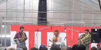
- 林栄一 (alto sax)
- 関島岳郎 (tuba)
- 中尾勘治 (soprano sax)
ほとらぴからっ
#告知に有ったwhachoさんは欠席、いつもと変わってベースが松永孝義さん(メンバー紹介の時にMUTE BEAT化してた)、チェロに四家卯大さんが入ってました。
どーもビニールハウスの湿気で太鼓の皮がヘロヘロだったらしく、何をどう叩いても「ポフ」という音でした。最後の2曲はほぼ「ほとらぴからっ+こまっちゃクレズマ」での演奏で、お祭り。
佳村萌さんの妙な存在感と、バックの微妙な協調関係。あー、やっぱり演奏ともかくとしても、このバンドは楽しいです。
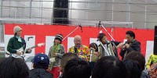
- すきま
- 残夢
- 重陽
- 海ざる
- 天女
- 一直線上の悲恋
- ダンスの楽園
- 佳村萌 (vocals)
- 張紅陽 (accordion,vocals)
- 斎藤ネコ (violin)
- 浦山英彦 (guitars)
- 横澤龍太郎 (drums)
- 松永孝義 (bass)
- 四家卯大 (cello)
#なんだか面白そうな面子だったので桜木町まで、やっぱり全部即興でしたけど。
巻上公一さんは物凄く久々に見たんですけど、見てるこっちの頭がおかしくなるよーなボイスパフォーマンス。ホーミーも気持ちよかったです。
佐藤正治さん(Adi,美狂乱,massa's jammer)は、実はこの日初めて見ました。ジャンベとwave drum使ってましたけど、ボイスパフォーマンスで巻上さんに対抗してる場面も多かったです。でもリズム出してる時のほうがはるかに面白いです、ていうかあんまり歌ってくれるな。そんなに複雑なことしてないんですけど、この人のビートはとても好きかも。一回ドラムセットで見てみたいなと思いました。
清水一登さんは相変わらず、この人の完全即興って結構珍しいと思うんですけど、ピアノの中にシンバルとかバネとか置いてプリペアドピアノみたいな事したり、風船こすったり、バスクラリネットでブピーとかやってました。
休憩挟んで2setの最初にやった巻上さんの口琴に合わせて突き進むよーなのがとてもかっちょ良かったです、というか清水さんのピアノが乗っかるとどーしてもプログレに聴こえちゃう。
なんつーか、変なオッサン達でした。
- 巻上公一 (voice,thermin,口琴,ホーミー)
- 清水一登 (piano,bass clarinet)
- 佐藤正治 (djembe,wave drum,voice)
#えーと前回が5/5でした、マンダラのスケジュールには書いてなかったんですけどちゃんとバカボン鈴木さんも出てました（なんでも次の日の朝イチで鳥取に行くとか・・・）あと近藤達郎さんの参加がとても嬉しかったです。これでほとんど
アルバムの時のメンツが揃った感じです。
えーとセットリストはうろおぼえなので、かなり嘘かも知れないです。重陽とか聴けて嬉しかったです。
メンバー一人一人個性強いような感じですけど、うまく溶け合ってるような楽しいライヴでした。なんかむずかしそーな曲も多いですけど、全然むずかしい印象は無くて。
ちなみに今後は11/24に梅津和時さんの大泉学園のイベント（なんかビニールハウスの中でやるとか）と、2003/3/3だそうです。
1st set:
- す・き・ま
- ?
- 一直線上の悲恋
- ダンスの楽園
- 重陽
- ?
2nd set:
- ?
- フラミンゴ
- 花子さんの場合
- 残夢
- 天女
- 初恋のあとのあと
- ?
encore:
- 夢見るように眠りたい
- ?
- さっちゃん
- 佳村萌 (vocals)
- 張紅陽 (accordion,piano,vocals)
- 浦山秀彦 (guitars)
- 斎藤ネコ (violin)
- 横澤龍太郎 (percussions)
- whacho (percussions)
- バカボン鈴木 (bass)
- 近藤達郎 (clarinet,harmonica)
#えーと行ってきましたSamla Mammas Mannaの初来日(ドラム吉田達也)を。
FABって狭いんですよね、やっぱりキツキツでした。でもサムラママスマンナのファンなんてこんなに居たのかとちょっと驚き、プログレの人も（俺もか）が多いみたい。
前座として「赤天」（吉田達也＋津山篤）を15分くらい？ジッパーにマイクをくっつけて「ジッパ～、ジッパ～、ジパジパジッパ～♪」みたいなやつ。いやほんとに。まさかコレを生で見ることになるとは思わなかった。
んで、Samla Mammas Mannaですが、
- Lars Hollmer (keyboards,pianica,voice)
- Coste Apetrea (guitars,voice)
- Lars Krantz (bass,voice)
- 吉田達也 (drums,voice)
というメンツ。Lars Hollmerの来日を2回ほど見てたんで、そんな感じかなとか思ってたんですけど、違いました。
とくに前半はお笑いプログレバンドみたいな感じになってました、曲のブレイクに良くわからんネタが挿入される変なバンドでした。L.Hollmerの来日の時のバンドよりも、崩した感じの演奏が多い感じです。吉田達也菌がサムラのメンバーに伝染したのかと思ったんですけど、どーやら元々そーゆー人達だったみたいで、サムラ菌と吉田菌がミックスされてわけわかんない事になってました。
吉田達也のドラムが、ガーっと突っ走るようなパートは非常に格好よいかなと思いましたけど、インプロはちょっとイマイチかな？
後半は
"KaKa"の曲が多かったです。演奏白熱してくるとやっぱりかっちょいいです、非常に。あ、ギターのおっさん(Zappaみたいな顔してた)はキメの所でよく外してたけど。
#えと、この日はよみうりランドでHermeto Pascoalが来てて、とてもとても行きたかったんですけど。お金とヒマの問題で行けませんでした、それにどーしてもこっちが見たかったし。
- 清水一登 (piano,keyboards)
- 鬼怒無月 (guitars)
- 芳垣安洋 (drums)
#行ったらリハやってました、ふぐ汁とか、タスマニアとか、地底人とかの合わせやってました。今までのライヴよりもだいぶまとまってるみたい、期待。
あ、ちなみにはじまる前によみうりランド帰りの
Tさんが来ました。パスコアル終わってから桜木町へ来たようです、やっぱり面白かったらしいです、いいなぁ。
#1st setは全部ぶっ通しで45分くらい。1曲目はなんだか清水一登らしくないかっこいいリフの曲、新曲みたい。清水さんががっちり構築した曲をどんどん崩して演奏するよーな感じ。以前よりも攻撃的な感じです、よくよく考えてみるとものすごく王道プログレなバンドでも有ることに気付きます。
- ? (新曲)
- ? (なんだっけな？)
- ふぐ汁
#2nd setは何やらSOFT MACHINEのOUT-BLOODY-RAGEOUSソックリのシーケンスから「ミネラルズ」「タスマニア」を演奏、この曲の緊張感はすごかったです、一番熱入ってたんじゃないかな？
演奏終わって清水さんが
「指から血出ちゃいました～」とか。指から血出して演奏する人を初めて見ました。かっちょいいぜ、イゴール。
久々のワンマンってこともあってか（まぁあんまりライヴやってないけど）この日はとても格好良かったです、"BLIVITS"とかやらなかったけど、もうKILLING TIMEでの曲は必要ないってことかな？バンドとして定着してきたよーな印象を受けました。
上にも書きましたけど構築/即興の交じり合ったよーな感じなんですよね、清水一登さんのトボケた感じのメロディーの合間を縫って、突然狂ったようなギターが入ってきたりする感じ。個人的にはもーちょい曲に忠実な感じでもいいような気もしますけど、ライヴではこれでいいのかも。
あ、あとCD出すかもとか。清水さんのソロアルバムが1990年だから12年振りくらいになるのかな？非常に期待値でかいです。
- ミネラルズ (前違う名前だったような・・・)
- タスマニア
- 情熱の通り雨
- Johnson Blues
- 19
- 地底人/最低人
- Johnson Blues (アンコール)
#なんだかすげーメンツを集めたフェスティバルでした、某ホリコシくんと行ったんですけど、よみうりランド着いて電話したら「うぁ？」とか言ってて・・・寝てんのかよ！という。そいえば
j-u-nさん一家もK太くんに観覧車乗るからとかダマして来てました。どーもでした。
誰が出たとかは
こっちを見てもらうことにしといて。(当日のセットリストとかも有ります)特に印象に残ったのだけ。
V∞redoms
3人のドラマーとEYEがステージの中心に向き合う感じのセットでした。
とにかく3人分のリズムが絡み合う上を山塚EYEが発信機やらターンテーブルで強引に盛り上げていくよーな感じ、あんあにドロドロはしてないんだけど
Amon Duul/Psychedelic Undergroundを思わせるような、呪術的な世界が1時間近くノンストップ。頭一つぬけてコレが格好良かったです。
山本精一+勝井祐二
#ヴォアダムズの直後、Tangerine Dreamみたいなチルアウトな音が響いてきました。すこしずつ音に変化を加えながら延々と持続音、ヴォアダムズと合わせて非常にジャーマンロックな気分を味わいました。
Black Frames
#途中途中面白かったけど、長すぎ。
SUN RA ARCHESTRA
#もーおじいちゃんばっかりなんですね。ピカピカの衣装をまとった、なんだかちょっと変なビッグバンドみたいな感じでした。サン・ラTシャツは欲しかったかも。
Juana Molina
#そーいえば、サン・ラの時に通訳のおねえちゃんとALEJANDRO FRANOVが愉快そうに踊ってました。
Juana Molinaは
去年出たアルバムが非常に気に入ってたアルゼンチンの人。J.Molinaのフォークっぽい音にF.KabusackiとA.Franovが薄味で電子音を乗せていきます。
何かが凄いって訳ではないですけど、声とギターと電子音の微妙なさじ加減が気持ち良いです。とてもまったり、かつ可愛い。
Medeski,Martin & Wood
#ジャムバンド独特のイキそうでイかないテンションって余り好きでは無いんですけど、流石にこのバンドは凄いっす。
んで、実はこの次の日にHermeto Pascoalをやっていたんですけど、清水一登のライヴ見たかったんであきらめちゃいました。パスコアルまた来ないかな？
#去年はパキスタンで入院してたので行けなかったフジロック。
残念ながらまたしても1日のみですが。トクタケくんの車に乗って男２女２で行ってきました、行きと帰り以外はほとんど会わなかったけど。
とりあえずタイムテーブルのようにレポ。映るんです持ってったけど、ロクな写真無かったのでほとんど割愛。デジカメ買おうかな？
#やっぱなんかこーゆーの行くと「夏だなぁ」とか思います、フツーにライヴ見に行くのとは違った楽しみが有るから。
| 02:00 |
到着
とりあえず会場周辺の駐車場に車を入れて、男2人野宿・・・・蟻が。 |
| 08:00 |
起きた
暑い。こんな天気でした
|
| 09:00 |
カレー
チケットをリストバンドと交換して、とりあえず会場へ。その前にカレーとビールで燃料補給。 |
| 10:00 |
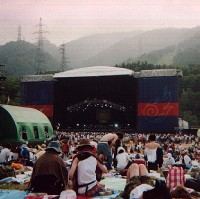 #GREEN STAGEの辺りにシートをひいて、待機。すでに結構な人が集まってます。
|
| 11:00 |
ゆらゆら帝国#ゆらゆら、ごめん、ちょっとしか見なかった。 |
| 11:40 |
Date Course Pentagon Royal Garden
#芳垣/吉見欠席で、変わりにイトケン(HARPY)と三沢いずみ(坪口さんと結婚したらしい)が参加。
菊地成孔さんはいつもの赤いシャツ着て、ズボンのボタンを留めずに登場。「出っ腹ー」とか突っ込んで欲しかったんだろうか？
吉見さんの欠席はやっぱ痛いよーで、ちょっと締まりが無かったよーな感じ。"MIRROR BALL"とかやらないし。ま、それなりに盛りあがってはいたんですけど。
- PLAYMATE AT HANOI
- CIRCLE/LINE～最後の平和を我らに
- HEY JOE
- 菊地成孔 (CD-J,keyboard)
- 大友良英 (guitars)
- 高井康生 (guitars)
- 栗原正己 (bass)
- 坪口昌恭 (keyboards)
- 後関好宏 (tenor sax)
- 津上研太 (soprano sax)
- 藤井信雄 (drums)
- イトケン (drums)
- 三沢いずみ (percussions)
|
| 12:50 |
the sonic youth experimental noise improvisational
#最初ちょこっとだけ見ました。
「びぃよ～ん」「ぽわわわぁ～ん」「がぴぃぃぃぃぃぃ」とかこんな感じ。
あーあーとか思って、来た道戻って四人囃子見に行きました。
ロックフェスティバルでノイズやられてもなぁ・・・・
|
| 13:00 |
四人囃子
#早い話、見た中でコレがベストでした。
WHITE STAGEに着いた時にはリハ中で、人もまばらな感じ。「期待されてないかな～」とか思いつつ一番前でリハ見てたら、いきなり「空飛ぶ円盤に弟が乗ったよ」のイントロが。ギターとベースがギュイギュイユニゾンしてます、ドラムも結構重い音出してて。えらいかっちょいいです、どーしちゃったんでしょうか？
個人的に四人囃子って同時代の（マキOZとかフードブレインとかフラワートラベリンバンドとか）とかと較べて、線の細い印象を持ってたので、ちょっとビビリますた、ました。
っていうか、もう近所の八百屋にちょっと茄子を買いに来た日曜のオッサンみたいなギターから、あんなにカッチョイイ音出てくる違和感。だてに年食ってるんじゃないぞと言うオーラがはみ出てました。
えーと曲は以下の通り、のっけから「おまつり」っす。アルバム「一触即発」「ゴールデンピクニックス」からの曲ばっかしですね、この時代の四人囃子の曲が今頃こんなに新鮮に響くとは思いませんでした、一触即発のブレーク入る所とか鳥肌立ちそうになったもんな、すげーよ四人囃子。
とりあえず四人囃子って何？ってかたはこっちから→www.4nin.com
- おまつり
- 空飛ぶ円盤に弟が乗ったよ
- 泳ぐなネッシー
- なすのちゃわんやき
- 一触即発
- 森園勝敏 (guitars)
- 岡井大二 (drums)
- 佐久間正英 (bass)
- 坂下秀美 (keyboards)
|
| 15:00 |
タイ風ラーメン美味し。 |
| 15:30 |
Char
#シートの所で昼寝中、遠くの方から聞こえて来ました。あ、「smoky」だけは起きて聴きました、あの曲かっちょいい。
他はギターソロの為の音楽みたいでちょっと、ドラムがスコーンとイイ音出してましたけど。 |
| 16:30 |
LITTLE CREATURES
#タイムテーブルに載ってなかった(未定になってた)ので、Char終わった後にアナウンスが無かったら見逃してたかも知れないです。
ドラム/ベース/ギターのトリオなんですけど、全員上手い・・・曲は sea and cake とかを更に緻密にしたよーな感じ、かなり好みかも。ガツンと来るような類の音では無いんですけど、地味～に良かったです。見れて良かった。
|
| 20:00 |
Cornelius
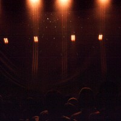
#アルバムPOINTが結構インドアな感じだったんで、先ほどのLITTLE CREATURESのノリで結構前の方でスタート待ってました、右の写真はなんだか映像の調整してる時に一瞬スゴイ綺麗だったんで。
で、スクリーンに小山田の影が映し出されて指先から "from" "Nakameguro" "to" "Everywhere" と1文字ずつ、単純だけど面白いっす。
んで、スクリーンが開いた瞬間「キャァー小山田く～ん」ってのに押しつぶされてました。痛い。
忘れてたよ、そーゆーファンのいるバンドだったんだ。
#結局少しがんばってみて、前の方で見てました。映像と音とのシンクロ具合が非常に楽しい感じで、ドラム(平ヶ倉良枝さんかな？)がクリック聴いて、みんなドラムに合わせるような感じで。そーいやドラムもカッチョ良かったですね。
曲はほとんどPOINTからかな？あと STAR FRUITS SURF RIDER とか。テルミンコーナー（客から一人連れ出してテルミン演奏させる）も楽しかったし、ライヴでこんなに楽しいバンドとは、知りませんでしたよ。
|
| 21:30 |
Red Hot Chili Peppers
#で、たぶん今回の目玉のレッチリ。新譜ほとんど聴いてないんで、新しい曲は良くわかんなかったんだけど。
とにかく「ぎぶらうぇいぎぶらうぇいぎぶらうぇい」は脊髄が反応するみたい、コレ聴きたかったので、かなり満足気。かっちょいい。
|
| 23:30 |
脱出
#混まないうちに早々に苗場を脱出してきました、湯沢のインターから。帰りのBGMはレッチリの新譜で、復習っちゅーか。
|
| 25:00 |
オービス
#関越道、どうも光ったみたいです、150km/hくらい。トクタケくんがブルーな顔してます。そのうち免停かな？あーあ。
|
#ま、こんな感じで。家に戻ったのは4:00くらい。次の日から2日くらい後遺症でポカーンとしてました。
- 佳村萌 (vocals)
- 張陽紅 (accordion)
- 浦山秀彦 (guitars)
- 斎藤ネコ (violin)
- バカボン鈴木 (bass)
- 横澤龍太郎 (percussions)
- Whacho (percussions)
#正式復活2回目のライヴ。個人的には最近一番楽しみにしているバンドです。
曲目は....覚えてる限りで....「ジンタ」「ダンスの楽園」「天女」「2022年の七夕まで」「残夢」とか...あと知らない曲も沢山。
今回は全曲バンドメンバーでの演奏。前回に較べてバンドらしくなってきたなぁと思いました。7月7日だから7拍子の曲を沢山やるとか、次回は10/10なので10拍子とか。（しかしこのバンドはライヴの日を覚えやすくてイイです）
あ、客席に佐野史郎さんが来てました。「夢見るように眠りたい」って映画に佳村萌さんと共演してたんですよね。コレのサントラ欲しいんですけど、未だに手に入らないです。はぁぁ。
いやもーでも本気で良かったです。上手く言えないんですけど、演奏してる人達の楽しそうな感じが伝わってきました。音楽的な手法とかテクニックとかすっ飛ばして、人間が演奏してるんだなーと思わせてくれるようなライヴでした。
#久々の小川美潮。板倉文さんと大川俊司さんとのユニットです。なんかバンド（ウズマキマズウ）は解散しちゃったらしいです。
えーと曲目は小川美潮さんの曲と、ブラジル音楽。「おいしい水」とか「one note samba」とか。
たぶんこれは板倉さんの趣味なんだろーけど、板倉さんのギターと小川美潮さんのピアニカで、Egberto Gismontiの「A fala da paixao」（
INFACIAに入ってます）なんてマニアックな曲もやってました。すっげー綺麗な曲。
あとはまぁ相変わらずのゆるーい雰囲気、やりなおしとか多い感じの、まぁそれでも全部許されるよーな空気を持ってるんですけど。
そいえば、Beatles「In My Life」とかもやってました。意外。
んでもやっぱりオリジナル曲がイイですね、「はじめて」とか。もっともっと評価されても良さそうな気がするんですけど。
あと、チャクラの再発アルバムにボーナストラックが付くようです、買い直そうかな？
1st set:
- Dear Mr.Optimist
- 花の答
- 遠い夏
- triste
- In My Life
- One Note Samba
- サンホセへの道
2nd set:
- Tea for Two
- おいしい水
- A fala da paixao
- 3月の水
- はじめて
- おかしな午後
- 私は宝
- 4 to 3
- ケセラ・セラ
- 小川美潮 (vocals,pianica)
- 板倉文 (acoustic guitars)
- 大川俊司 (bass,acoustic guitar)
#えーと、オランダのフリージャズのドラマー(Derek Baileyとかと良く一緒にやってる)の来日。
共演は
大熊亘(シカラムータ)と勝井祐二(ROVO,Bondage Fruit)。なんだかかみ合いそうなかみ合わなそうな不思議な面子。客層もかみ合わなそう。
1st set
- Han Bennink Solo
- Han Bennink + 大熊亘 (clarinet,etc)
2nd set:
- Han Bennink + 勝井祐二 (violin)
- Han Bennink Solo
- Han Bennink Solo
昔一回だけHan Benninkを見た時に圧倒されたんですけど、相変わらずのすごいテンション。何が起きてもドラム叩く手を緩めないのがスゴ。スティックをくわえて、シンバルをくわえて、両足でタムを押さえて音調節したりしえてても、必ず右手か左手が凄いスピードで何かを叩き続けてるの。
#
Jump for Joyのレコ発イベントってやつです。実はナマ鈴木惣一郎さんは初めてでした。
少人数でギターとかのアンサンブルみたいなのかと思ってたら、wood bassにmusical sawにglockenspielにviolinにeuphoniumにbanjoに....10人くらいゾロゾロと。
で、一曲目。いきなり はっぴぃえんどの「しんしん」、音の方はなんていうか絶妙なバランス。和やかに盛り上がって行きます。アルバムのLOTUS LOVEとかやってたかな？他はわからなかったけど。
こんなだったらWORLD STANDARD名義でフルサイズのライヴをやって欲しいなとか思いました。かっこいい。
ちなみにTシャツが当たるジャンケン大会が有ったんですけど、一発目で負けました。
#Caravan/Camel/Hatfield and the NorthのRichard Sinclairの来日ライヴ。サポートの面子はトリオ・ロス・オバピノス
- Richard Sinclair (bass,guitars,vocals)
- 清水一登 (keyboards)
- 鬼怒無月 (guitars)
- 芳垣安洋 (drums)
1部はリチャードがギターを持って弾き語り....客のリクエストに応えていろんな曲をやってました。CaravanのLand of the Grey and PinkとかCamelのDown on the Farmとか歌ってました。
でもかなりテキトー、と言うか歌詞覚えてないよな。
トリオ・ロス・オパビノスが2曲だけ演奏して。（地底人/最低人ともう一曲なんか）2部。いきなりHatfieldのShare Itでした。リチャードはベースを弾いて.....って、リハしたか？みたいな危うい演奏。バックの3人も困るような感じ。
曲は他にWinter WineとかCamelの曲（カッコ良かったんだけど、曲名がわかんない）あとやっぱりHatfield and the Northで、Halfway Between Heaven and Earthとかやってました。
清水一登さんは、Hatfieldの曲とか嬉々として弾いてました。清水一登さんがカンタベリー好きなのって結構有名な話で、Areposのライヴで'Moon in June'なんてやってたし。ちょっと熱意が伝わってくるよーな感じもしました。
2回目のアンコールでリチャードが出てきて、Matching MoleのO Carolineをマイク無しで..ちょっとしみじみ...でもやっぱり後半はテキトーでしたけど。こんな曲まで聴けると思いませんでした。
会場出てみると3時間近く経ってました。演奏的には多々問題が有るようなライヴでしたけど、リチャードの人柄と声とで結局許されるようなそんなライヴだったかな？願わくばもし次の来日が有るなら演奏家としての面も見せてもらいたいですけど。
#MOSTと渋さを見に。で一つ目が渋さ知らズ。
渋さ知らズ:
片山広明／不破大輔／植村昌弘／勝井祐二／ペロ／泉邦宏／中根信博／川口義之／リマ哲／高岡大祐／関根真理／北陽一郎／渋谷毅／佐々木彩子／ムロダテアヤ／さる／加藤崇之／小森慶子／ヒゴヒロシ／立花秀輝／古池さん／ム～チョで赤坂／松／たむたむ／さやか／鬼頭哲／渡辺勝／芳垣安洋／太田豊／東洋組（まゆみ.東洋.ゆうすけ）
ってメンバー（
地底新聞からコピぺ）
やーっぱ相変わらずの怒涛のバカ乗り。楽しいです。
Bloodthursty Butchers:
つまんなかったっす。
プンクポイ:
ロマンポルシェの人みたいです、脚立に乗っかってベースを弾きながら甲高い声で歌ってました。時々息切れしてておかしかったです。そそくさと終わって良かったです。
MOST:
で随分前から見たかったMOSTなんだけど、この日はクアトロ行ったら
本日、MOSTの山本精一は怪我のために出演できません。とか書いてあって。なななんだそりゃ？みたいな。
んでもその変わりに勝井祐二さん参加の編成でした、それはそれでラッキー７みたいな。
- PHEW (vocals)
- 山本久土 (guitar)
- 茶谷雅之 (drums)
- 西村雄介 (bass)
- 勝井祐二 (violin)
最前列は危険地帯で汗臭かったです。後半思わずその危険地帯に突っ込んでって飛び跳ねたりしてたら、次の日首が痛かったです。もう若くないですね。
勝井祐二さんもあんなアグレッシブなの久々に見たかも。耳が心地よくギュイーンと痛かったです。
なんつーか勢いだけでなくて、あの轟音をバンドできちんとコントロールしてるような印象で。大人のパンクかな？
あと
PHEWさんって5年くらい前に見た時より若くなってるよーな気がしました。
#こんなにずーっと待ってたライヴも無いもんで。
- 佳村萌 (vocals)
- 張紅陽 (keyboards,accordion)
- 浦山秀彦 (guitars)
- 斎藤ネコ (violin)
- バカボン鈴木 (bass,mandolin)
- 横澤龍太郎 (percussions)
- Whacho (percussions)
- 梅津和時 (clarinet)
- 多田葉子 (sax)
- 原マスミ (vocals)
曲目とかは
アルバムからの曲と何曲かきっと昔の曲から。
佳村萌さんのなんだか甘い匂いがしてきそーな柔らかい声と、張さんの不思議なふわふわしたキーボードのフレーズで。11年振りとか言ってても、なんだかもうとても幸せな感じのライヴ。
あんまり好きすぎるバンドはとてもレポートにならないんですけど、お祭りみたいな新曲も良かったし.....一曲一曲短編映画みたいな濃い印象。
後半ではこまっちゃくれずまで張紅陽さんと一緒にやってる梅津和時さんと多田葉子さんがゲスト参加、やっぱり「ダンスの楽園」なんてやってたりして。
アンコールでは原マスミさん（すっげー久しぶりに見ましたが）が出てきて、一緒に歌ってました。
ほんとに楽しいライヴでした、久々に純粋に好きだけで見れるバンド。次が楽しみ。
#2002年最初のライヴ。でも本当は行く気無くて、正月はじめて実家に帰ってて弟と話してたら「行こう」とか言うことになって、急遽車で吉祥寺へ。「大吉」とかいう正月早々ヘンなオールナイトイベント。
入ったらボンデージフルーツがはじまる所でした。
- 勝井祐二 (violin)
- 鬼怒無月 (guitars)
- 高良久美子 (vibraphone,percussions)
- 大坪寛彦 (bass)
- 岡部洋一 (percussions)
っていういつものメンバー、見るのは
一昨年末のクロコダイル以来かな？長尺の曲を2曲演奏してました。1曲目は高良さんのvibeの音がなんだか音響系みたいな感じの曲でした。2曲目はとにかくガーっといった感じの曲....ちょっとこっちは間延びしちゃうような気も。
で、DJタイム。だるい。
その次がインプログレ?ってやつ
- ホッピー神山 (keyboards)
- 吉田達也 (drums)
- ナスノミツル (bass)
最近の戸川純のバックバンド引くDennis Gunn みたいなバンドみたく、インプロ + プログレでインプログレだって。
結構想像してたよりも面白い音でした、吉田達也のバカスカ言う手数の多いドラムにホッピー神山がなんだかジャズっぽいフレーズを乗っけていくよーな感じで、ナスノミツルはファズかけたベースをズビズバ。あと吉田達也とホッピー神山が時々咆える。
2曲目とかは無理矢理途中で拍子を変えたり変なブレークが入ったりしたけど、1曲目のストレートなビートの方がかっちょよかったです。ちょっとマグマっぽくも有ったり。
で、またDJタイム。ねむい。
DJがパフィーを流し始めたと思ったらDCPRGのはじまり
メンバー多いので割愛しますけど、この日も結構良かったかな？
- ?
- PLAYMATE AT HANOI
- CIRCLE/LINE ～最後の平和を我らに
- 安っぽくて泣きたくなる話
1曲目はCATCH22じゃなかったです、珍しく。個人的にはあの全員違うテンポのは苦手なんでこの方が良かったかな？あとは好きな曲。やっぱり「安っぽくて泣きたくなる話 (MIRROR BALL)」がイイですねー、ビッグバンドな曲ですけどなんか泣けます。
あと吉見征樹さんのタブラがやっぱり格好良すぎ。あの人一人だけの演奏でもずーっと聴いてられそう。
菊地成孔さんは日記で書いてたとおり、太ってました。
結局、眠かったんでDCPRG終わったら弟を置き去りにそて車で帰って寝ました。